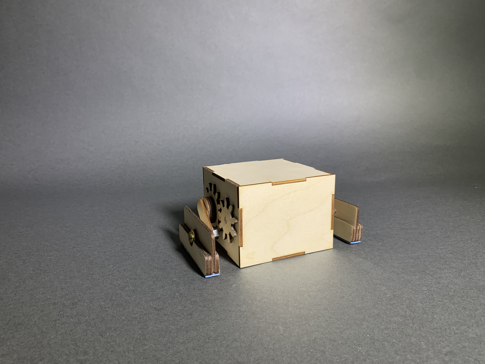
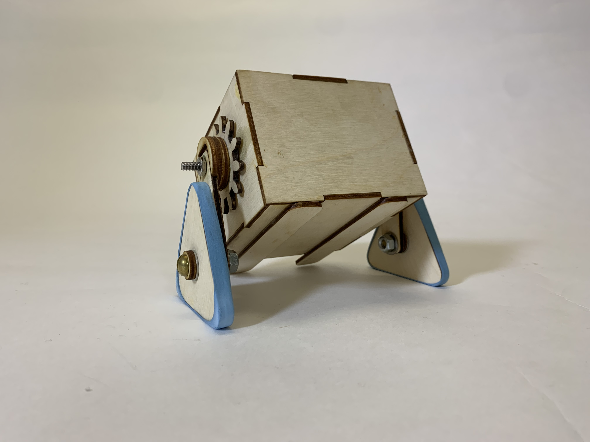
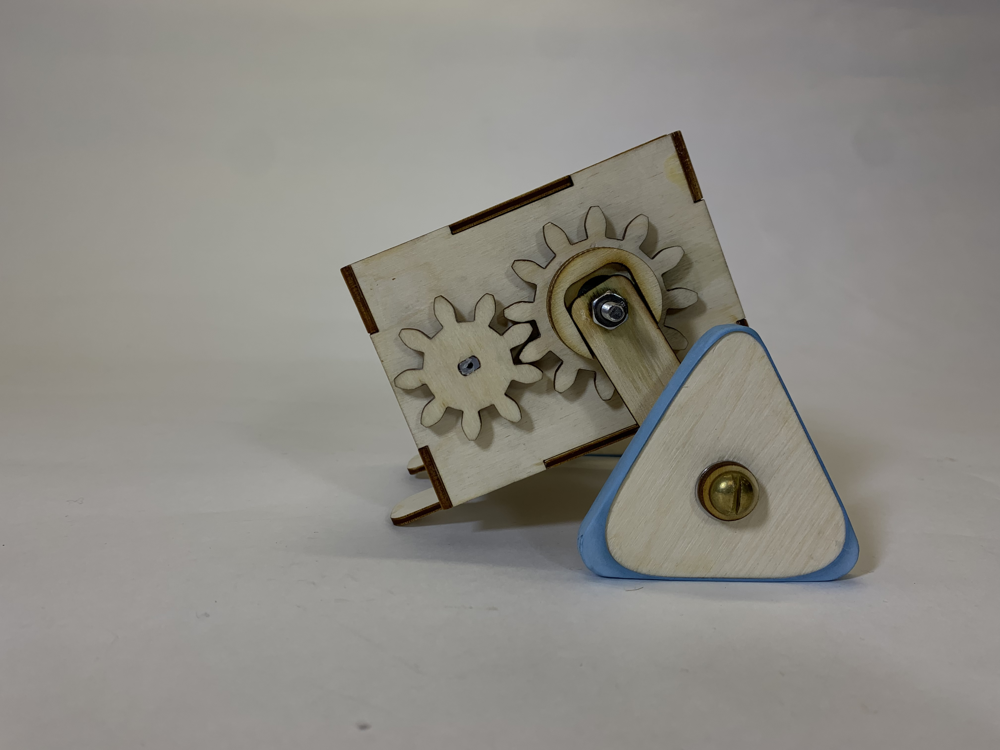
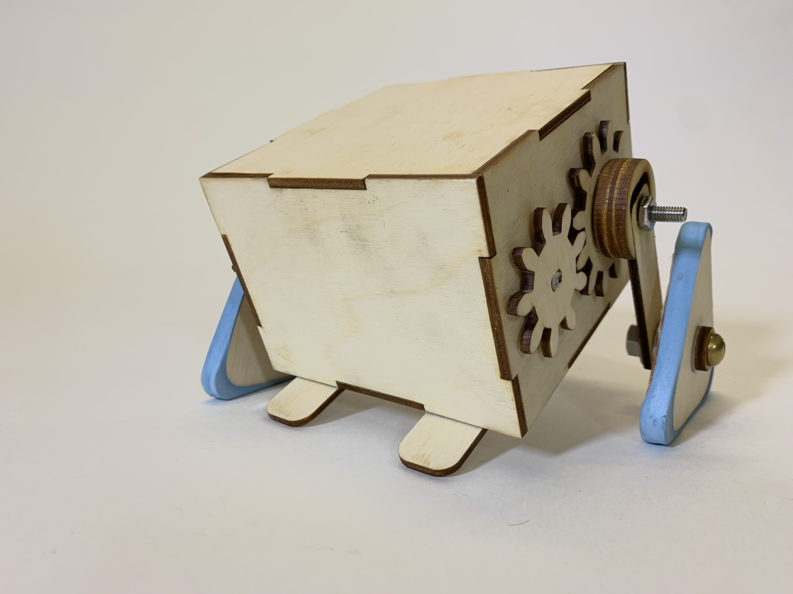
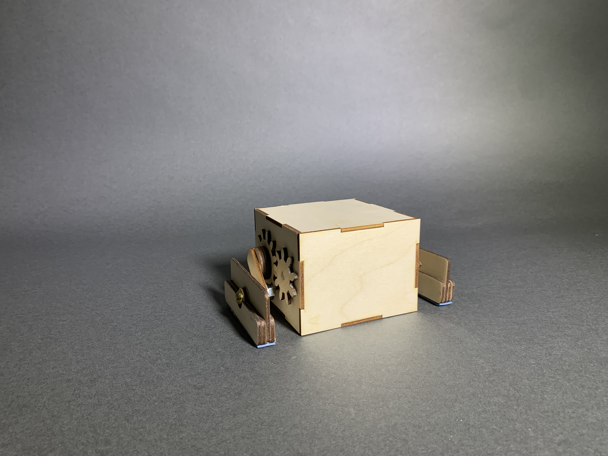
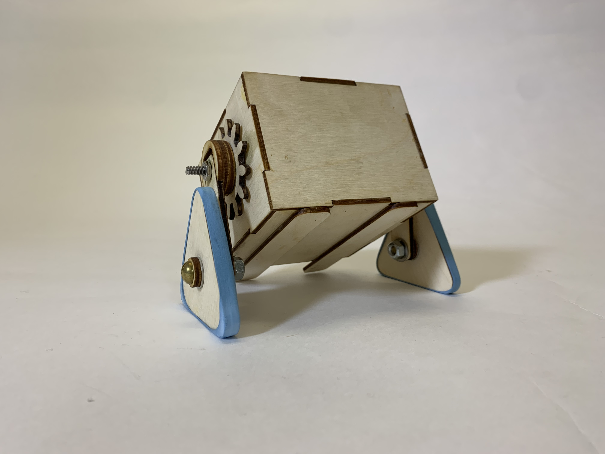
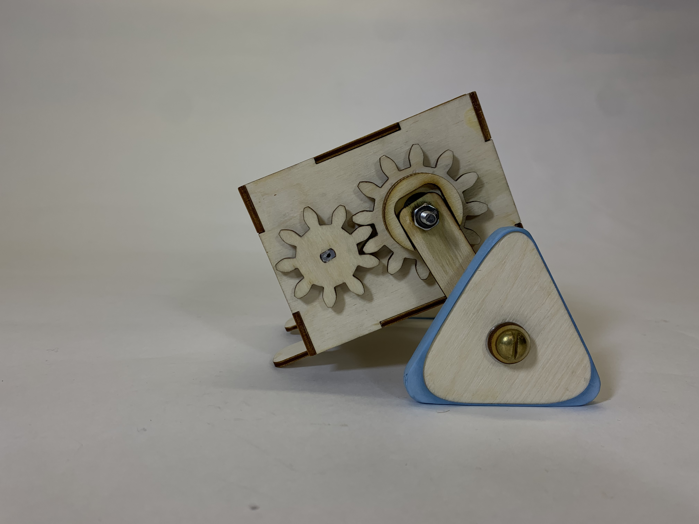
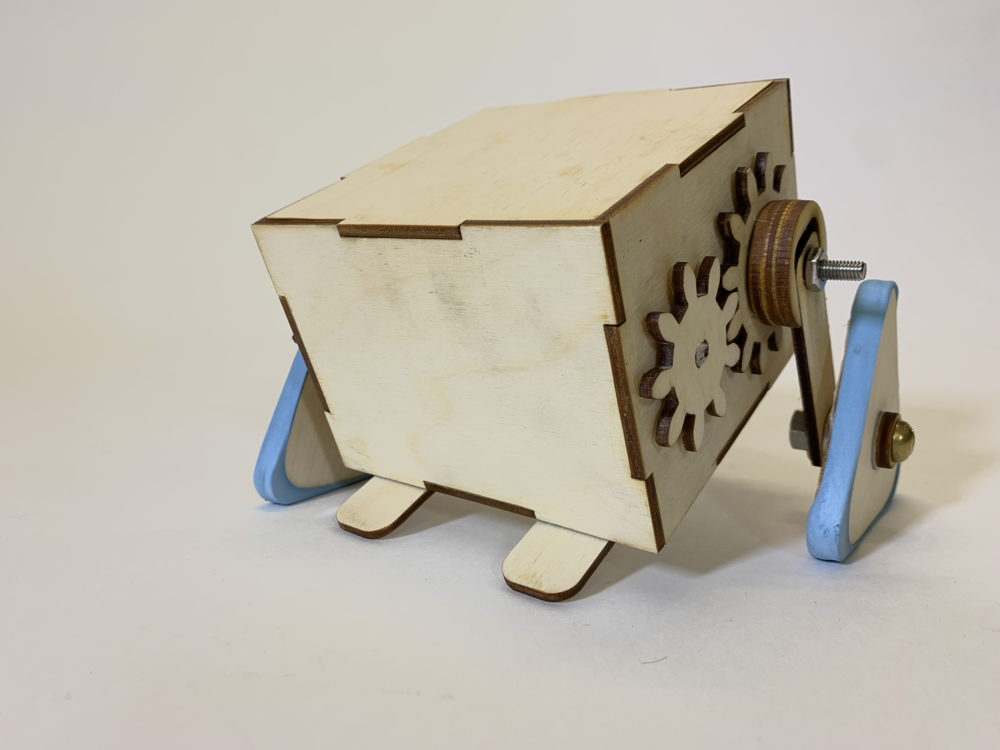

Stomper
This goal of this project was to design a vehicle capable of tackling an obstacle course comprised of
ramps and speed bumps with one caveat: no wheels allowed. Looking at past projects, it seemed that there
were a couple archetypal designs that got copied every year, namely tank-like treaded vehicles and normal-
looking cars with wooden spirals or spokes instead of wheels. With this in mind, my partner
Sona Dolasia and I
decided to pursue a “stomping” type vehicle, which moves as the name would suggest.

For our first iteration, I designed an incredibly simple motive mechanism with a set of two gears.
I used what hardware we found lying around to connect the gears to our box. We were both surprised at how well the
first prototype moved and turned.
With V1 in the bag, we then focused on reducing friction inside the motive mechanism, and increasing
the durability of the vehicle as a whole. We sourced metal washers to isolate rotation of the gears from the
box, and also align the gears perfectly with respect to the sides of the box. I sanded down irregularities on
the sides of the DC motors so they mounted flush against the sides of the box. We applied thread locker to all
the bolts to prevent them from tightening or loosening if they happened to rotate with the gears.
And, in order to help the rectangular feet re-orient between stomps, we added mass to the bottom of both feet
in the form of additional layers of wood. Sona also added some thicker rubber bands to the bottoms in an
effort to gain more traction.

Unfortunately, our second version still had trouble getting proper traction, and the rectangular feet
occasionally wouldn’t re-orient while in the air between stomps.
For our third and final version, we decided to switch to a triangular shape for the feet, and
stretch rubber bands around them. We also relocated the battery pack to the front of the vehicle (to
prevent tipping while climbing), switched to lighter non-rechargeable batteries, and added wooden
tails to prevent the box from flipping.



This goal of this project was to design a vehicle capable of tackling an obstacle course comprised of ramps and speed bumps with one caveat: no wheels allowed. Looking at past projects, it seemed that there were a couple archetypal designs that got copied every year, namely tank-like treaded vehicles and normal- looking cars with wooden spirals or spokes instead of wheels. With this in mind, my partner Sona Dolasia and I decided to pursue a “stomping” type vehicle, which moves as the name would suggest.
For our first iteration, I designed an incredibly simple motive mechanism with a set of two gears. I used what hardware we found lying around to connect the gears to our box. We were both surprised at how well the first prototype moved and turned.
With V1 in the bag, we then focused on reducing friction inside the motive mechanism, and increasing the durability of the vehicle as a whole. We sourced metal washers to isolate rotation of the gears from the box, and also align the gears perfectly with respect to the sides of the box. I sanded down irregularities on the sides of the DC motors so they mounted flush against the sides of the box. We applied thread locker to all the bolts to prevent them from tightening or loosening if they happened to rotate with the gears.
And, in order to help the rectangular feet re-orient between stomps, we added mass to the bottom of both feet in the form of additional layers of wood. Sona also added some thicker rubber bands to the bottoms in an effort to gain more traction.

Unfortunately, our second version still had trouble getting proper traction, and the rectangular feet occasionally wouldn’t re-orient while in the air between stomps.
For our third and final version, we decided to switch to a triangular shape for the feet, and stretch rubber bands around them. We also relocated the battery pack to the front of the vehicle (to prevent tipping while climbing), switched to lighter non-rechargeable batteries, and added wooden tails to prevent the box from flipping.
  